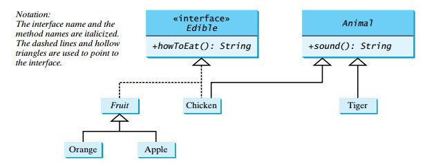
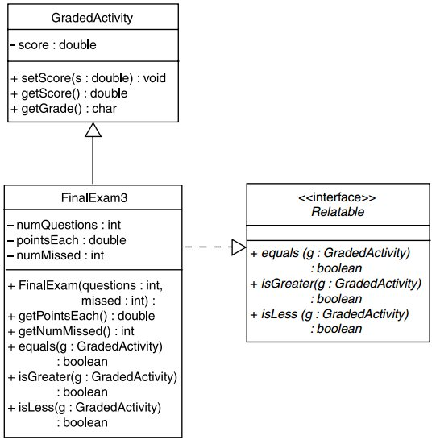
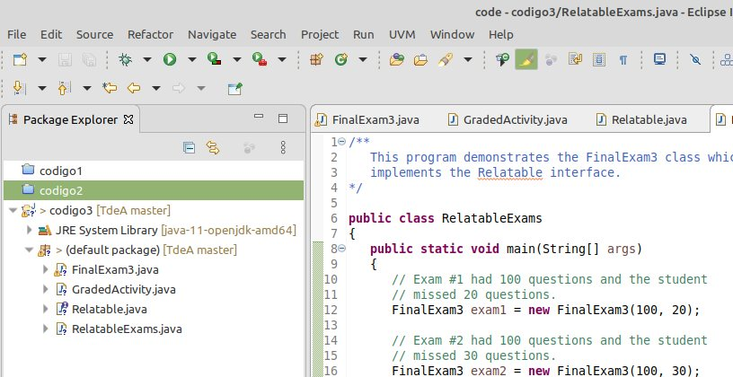
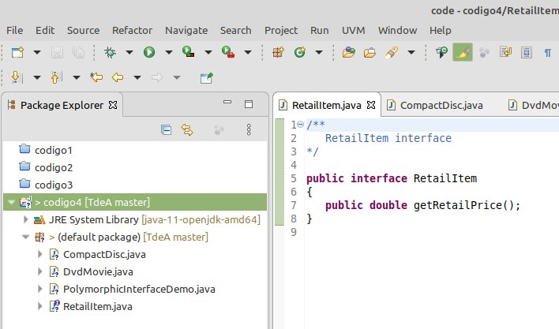

Interfaces¶
Sobre las interfaces¶
Una interfaz es un tipo de clase que contiene sólo constantes y métodos abstractos.
De manera similar a lo que sucedia en las clases abstractas, cuando una clase implementa una interfaz, la clase debe sobreescribir los metodos que son descritos por la interfaz.
Implementación de interfaces en java¶
Java usa la siguiente sintaxis para definir una interfaz:
modifier interface InterfaceName {
/** Constant declarations */
/** Abstract method signatures */
}
En la instrucción anterior, solo se define la interfaz con sus metodos y constantes abstractas dejando a la clase que implementa la interferfaz el trabajo de definir lo que hacen dichos metodos abstractos. Para que una clase pueda implementar los metodos de una o varias interfaces se emplea la siguiente sintaxis:
modifier class className implements InterfaceName1, InterfaceName2,... {
/** Class code */
}
La relación entre la clase y la interfaz es conocida como herencia por interfaz. Ya que la herencia por interfaz y la herencia por clase son practicamente las mismas, es común referirse a ambos tipos de herencia como herencia.
Cuando una clase implementa una interfaz, esta acordando implementar todos lo métodos que son espeficicados por la interfaz. Por esto se suele decir que una intefaz es como un contrato, de modo que cuando una clase implementa una interfaz esta debe cumplir a este contrato.
Ejemplo 1¶
Suponga que se define la interfaz edible (comestible) en el siguiente en el archivo Edible.java cuyo contenido es el siguiente:
public interface Edible {
/** Describe how to eat */
public abstract String howToEat();
}
El fin de esta interfaz es especificar si un objeto es comestible. Asi, por ejemplo si una clase es comestible deberá implementar esta interfaz. Para el caso, supongase que se tienen varios animales y vegetales implementados como clases tal y como se muestra en la siguiente clase (TestEdible.java:
public class TestEdible {
public static void main(String[] args) {
Object[] objects = { new Tiger(), new Chicken(), new Apple() };
for (int i = 0; i < objects.length; i++) {
if (objects[i] instanceof Edible)
System.out.println(((Edible) objects[i]).howToEat());
if (objects[i] instanceof Animal) {
System.out.println(((Animal) objects[i]).sound());
}
}
}
}
abstract class Animal {
/** Return animal sound */
public abstract String sound();
}
class Chicken extends Animal implements Edible {
@Override
public String howToEat() {
return "Chicken: Fry it";
}
@Override
public String sound() {
return "Chicken: cock-a-doodle-doo";
}
}
class Tiger extends Animal {
@Override
public String sound() {
return "Tiger: RROOAARR";
}
}
abstract class Fruit implements Edible {
// Data fields, constructors, and methods omitted here
}
class Apple extends Fruit {
@Override
public String howToEat() {
return "Apple: Make apple cider";
}
}
class Orange extends Fruit {
@Override
public String howToEat() {
return "Orange: Make orange juice";
}
}
Si se observa el código anterior, se podrá notar que las clases Chicken y Fruit implementan la interfaz comestible ya que cada uno de estos objetos son comestibles. De este modo, al implementar dicha interfaz, lo que hacen dichos objetos es definir lo que hace el metodo abstracto howToEat() dado en la interfaz; mas especificamente, decir como se come. A continuación se muestra la salida del programa:
Tiger: RROOAARR
Chicken: Fry it
Chicken: cock-a-doodle-doo
Apple: Make apple cider
En la siguiente figura se muestra la relación entre las clases y la interfaz definidas en la aplicación anterior. Observe con detenimiento como se define una interfaz y su relación con las clases que implementan su metodos en UML:

Ejemplo 2¶
Analice y comprenda el siguiente programa compuesto por los archivos:
Archivo: Displayable.java
public interface Displayable {
void display();
}
Archivo: Person.java
public class Person implements Displayable {
private String name;
// Constructor
public Person(String n) {
name = n;
}
// display method
public void display() {
System.out.println("My name is " + name);
}
}
Archivo: InterfaceDemo.java
/**
* This program demonstrates a class that implements the Displayable interface.
*/
public class InterfaceDemo {
public static void main(String[] args) {
// Create an instance of the Person class.
Person p = new Person("Antonio");
// Call the object's display method.
p.display();
}
}
La salida en pantalla del programa será la siguiente:
My name is Antonio
Algunos aspectos a tener en cuenta sobre el uso de interfaces¶
Una interfaz es tratada como una clase especial en java. A continuación se resaltan algunos aspectos claves relacionados con las interfaces
Cada interfaz es compilada como un archivo bytecode separado, justo como una clase.
Una interfaz se puede usar mas o menos de la misma forma que una clase abstracta. Para explicar esto, supongase que se tiene la siguiente interfaz definida:
public interface Empleado {
public double sueldo();
public String departamento();
}
Tal y como sucede con las clases abstractas, es valido declarar referencias a una interfaz tal y como se muestra el siguiente fragmento de código:
Empleado empleadoNuevo;
Sin embargo, la creación de un objeto de la interfaz es ilegal:
empleadoNuevo = new Empleado(); //ilegal
Una vez creada una referencia a una interfaz, es posble que esta sea usada para hacer referencia a objetos de las clases que implementan dichas interfaces tal y como se muestra en el siguiente código:
// Declaracion de la interfaz empleado
public interface Empleado {
public double sueldo();
public String departamento();
}
// Declaracion de la clase EmpleadoTiempoCompleto que implementa la interfaz Empleado
class EmpleadoTiempoCompleto implements Empleado {
//code
}
// Declaracion de la clase EmpleadoTiempoParcial que implementa la interfaz Empleado
class EmpleadoTiempoParcial implements Empleado {
//code
}
// Declaracion de la referencia empleadoNuevo1 a la interfaz Empleado
Empleado empleadoNuevo1;
// Creacion de un objeto de la clase EmpleadoTiempoCompleto
empleadoNuevo1 = new EmpleadoTiempoCompleto();
// Invocacion del metodo sueldo del empleado tiempo completo
double salario1 = empleadoNuevo1.sueldo();
// Declaracion de la referencia empleadoNuevo1 a la interfaz Empleado
Empleado empleadoNuevo2;
// Creacion de un objeto de la clase EmpleadoTiempoParcial
empleadoNuevo2 = new EmpleadoTiempoParcial();
// Invocacion del metodo sueldo del empleado tiempo parcial
double salario2 = empleadoNuevo2.sueldo();
Si una clase ademas de implementar metodos de una interfaz; posee metodos propios. El acceso, desde referencias de la intefaz, a metodos diferentes a los implementados en la clase para la interfaz generará errores:
// Declaracion de la interfaz empleado
public interface Empleado {
public double sueldo();
public String departamento();
}
// Declaracion de la clase EmpleadoTiempoCompleto que implementa la interfaz Empleado
class EmpleadoTiempoCompleto implements Empleado {
//code
public void actualizarSalario(double increment) {
//...
}
}
// Declaracion de la clase EmpleadoTiempoParcial que implementa la interfaz Empleado
class EmpleadoTiempoParcial implements Empleado {
//code
}
// Declaracion de la referencia empleadoNuevo a la interfaz Empleado
Empleado empleadoNuevo;
// Creacion de un objeto de la clase EmpleadoTiempoCompleto
empleadoNuevo = new EmpleadoTiempoCompleto();
// Invocacion del metodo actualizarSalario propio de la clase empleado
empleadoNuevo.actualizarSalario(25); // ERROR de complilacion
Para evitar este error, se puede hacer uso del operador casting al objeto en el que se define el método para evitar este error tal y como se muestra a continuación:
((EmpleadoTiempoCompleto)empleadoNuevo).actualizarSalario(25);
Ejemplo 3¶
Se tiene el siguiente diagrama UML:

El cuyas clases estan implementadas en los siguientes archivos:
Interface Relatable: Relatable.java
Clase GradedActivity: GradedActivity.java
Clase FinalExam3: FinalExam3.java
Finalmente, se tiene una clase para test, la cual es RelatableExams.java. La estructura del proyecto en eclipse se muestra a continuación:

Despues de ejecutar el programa la salida es:
Exam 1: 80.0
Exam 2: 70.0
The Exam 1 score is the highest.
Analice y comprenda el programa.
Polimorfismo e interfaces¶
Como se vió anteriormente, java permite crear referencias a interfaces. Una refencia es una variable que puede hacer referencia a cualquier objeto que implemente una interfas, regardless de su tipo de clase.
Ejemplo 4¶
A continuación se muestra el siguiente ejemplo en el cual se muestra lo anteriormente descrito:
El cuyas clases estan implementadas en los siguientes archivos:
Interface RetailItem: RetailItem.java
Clase CompactDisc: CompactDisc.java
Clase FinalExam3: DvdMovie.java
Finalmente, se tiene una clase para test, la cual es PolymorphicInterfaceDemo.java, notese el uso de las referencias. La estructura del proyecto en eclipse se muestra a continuación:

Despues de ejecutar el programa la salida es:
Item #1: Greatest Hits
Price: $18.95
Item #2: Wheels of Fury
Price: $12.95